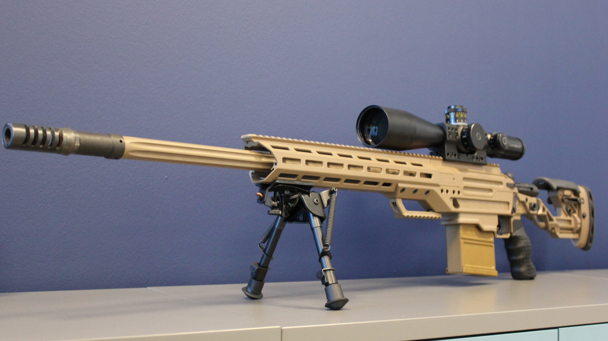

A tervek
A fejlesztők megpróbálták pontosan annyira élethűre alakítani a játékmenetet, hogy az még ne menjen a játszhatóság rovására. Például nincsenek elsősegélycsomagok, viszont ahhoz, hogy valaki meghaljon, még a legerősebb fegyverből a legrosszabb esetben is két találat szükséges
(limbshot esetén). Az élethűség a fegyverek kialakításában is alapvető szempont volt, a játékban található modellek egytől egyig megtalálhatók a valós életben is. A fegyverek alapvetően két csoportra vannak osztva: a pisztolyokra(secondary) és a vállfegyverekre(primary). A vállfegyver lehet géppisztoly, sörétes puska vagy karabély, azon belül gépkarabély, félautomata vagy forgó-toló záras mesterlövészpuska.
Mindkét típusból egyet-egyet vihetünk magunkkal induláskor, melyeket vásárlással szerezhetünk meg. Minden kill ($300) és megnyert kör után pénzt kap a játékos – a győztes csapat tagjai természetesen többet. Túszok illetve csapattársak sebzéséért, megöléséért pénzmegvonás jár.
A játékot két csapat játssza, a terroristák (Terrorists, röviden T) és a terrorista-elhárító alakulat (Counter-Terrorists, röviden CT). A játék körökre van osztva, minden kör elején mindkét csapat teljes létszámmal indul. A kezdő területen van lehetőség arra, hogy a csapattagok fegyvert, páncélt és egyéb kiegészítőket (gránátok stb.) vegyenek, majd indul a kör, melyben mindkét csapatnak egy adott feladatot kell végrehajtania.
A második képen egy CS 1.6- hoz tartozó map pack (pályakészlet) látható
Pályák típusai (erről bővebben itt) /játékmódok
Speciális (custom) játékmódok:
- AIM
- GG
- KZ
- ZM
- Surf
Counter-Strike
A CS típusú pályákon a terrorelhárítók feladata a terroristák fogságában lévő túszok megkeresése, és a kezdőpontjukra történő kimentése. A terroristáknak természetesen ezt kell megakadályozni, tehát itt gyakorlatilag az elhárítók támadnak, a terroristák védenek.
Demolition
A DE típusú pályákon két célpont van. A terroristák feladata felrobbantani ezek közül az egyiket. A két célpont között tetszőlegesen választhatnak. Az egyik terroristánál van a bomba, ezt a hátán lévő hátizsák jelzi. Ezt a célponthoz eljutva élesítenie kell (alapjáraton 5-ös gomb, és tűz gomb nyomva tartása), és szervertől függően 35-45 másodpercen belül robban a bomba (de ez lehet kevesebb vagy több is). A terrorelhárítóknak ezzel szemben a bomba lerakását kell megakadályozniuk. Ha a terroristáknak mégis sikerül beélesíteniük a bombát, akkor a hatástalanítást kell elvégezni. Ez bombahatástalanító készlet (defusal kit) nélkül 10, defuse kittel 5 másodpercig tart, a use gombot kell lenyomva tartani a bombára nézve. Eközben mozogni, ugrani nem tudunk.
Escape
Az ES típusú pályák szinte teljesen eltűntek. A feladat a következő: a terroristáknak el kell menekülni egy vagy két kijutási ponton, az elhárítóknak ezt kell megakadályozni. Ha az összes terrorista meghal, vagy nem szabadulnak ki a rendelkezésre álló idő alatt, a kört az elhárítók nyerik. Ezeken a pályákon limitálva van a vásárlás.
Assassination
Az AS típusú pályák már kihalófélben vannak. A feladat nagyon egyszerűen hangzik: egy VIP személyt kell eljuttatni a pálya egyik végétől a másikig. A VIP-t mindig az egyik elhárító játssza, ő vásárolni nem képes, csak az alap pisztolyt használhatja. Ha lelövik, a kört az elhárítók elvesztették.
Fighting Yard
A FY típusú pályáknak nincs tényleges konkrét feladattartalmuk, egyszerűen csak le kell lőni az ellenség összes játékosát. Ezek többnyire szórakozásra készített „fun” pályák változatos nehezítésekkel, az ún. funserverek futtatják őket.(Pl. fy_pool,fy_snow). Például egy adott fegyver nevével (pl. AWP) kezdődő nevű pályákon csak azt a fegyvert lehet használni, a 35 hp pályákon 35 életerővel, általában késsel, ritkábban pisztollyal (de csak 1 lövéssel) lehet játszani.
Játékos által készített (custom) játékok
A "listen" szerverek ugyanabban a folyamatban futnak, mint a játékkliensek. Egyébként dedikált szerverként működnek, de jellemzően az a hátrányuk, hogy távoli játékosokkal kell kommunikálniuk a fogadó lejátszó lakossági internetkapcsolatán keresztül. A teljesítményt csökkenti, hogy a szervert futtató gép egy kimeneti képet is generál. A figyelőszervereknek azonban megvan az az előnyük, hogy alapvetően ingyenesek, és nem igényelnek semmilyen speciális infrastruktúrát vagy előre tervezést, ami általánossá teszi őket a LAN-partikon. A CS:GO lehetőséget kínál egyéni játékok indítására, készíthető botokkal vagy anélkül.